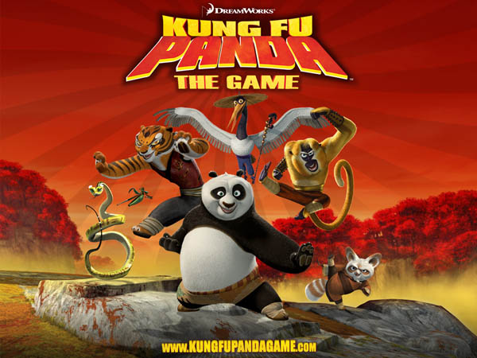
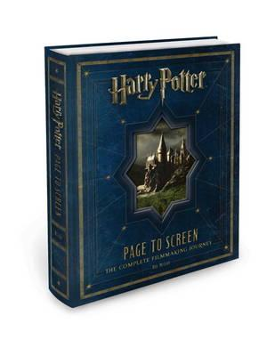

#Level1Unit5: Dear EF, Today, I tried to meet new friends but I did not practice enough so when I introduced myself, my new friends thought that I was going to steal their phone. Luckily, I managed to run away. 2 hours ago
#Level1Unit3 Dear EF, Today, I watched an English action movie. It's called Kung Fu Panda. I've always wanted to be an action star and I thought only thin people can do that. But now, I know, I dont need to train and work hard... I can be an action star like the panda in the movie. Yesterday

#Level1Unit2 Dear EF, Today I read a romance novel called Harry Potter. There are 6 books in this series and I read the first one. It's called Philospher's stone. I think I dont have to read the rest of the series. I know Harry is gay and he will end up with Ron.Apr 17, 2013 5:39 PM

#Level1Unit1 Dear EF, Today, I went to the market to buy vegetable. See this picture of me with an "eggplant". Apr 14, 2013PM
#Level1Unit1 Dear EF, This is my first task. This is reason why I want learn English because of my stupid ex boyfriend. How can I not know he gay. He like wearing woman clothes and putting wig. One day, I saw him playing with my listick. I ask... what you do... he say.. I miss you so I wear your listick Apr 10, 2013 PM